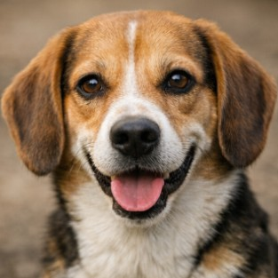

Bella är en livlig och vänlig tik som älskar promenader och lek med andra hundar. Hon är van vid barn och behöver ett hem med utrymme för aktivitet.
Hon har fått all nödvändig vaccinering och veterinärkontroller. Bella söker nu ett kärleksfullt hem där hon får trygghet och uppmärksamhet.